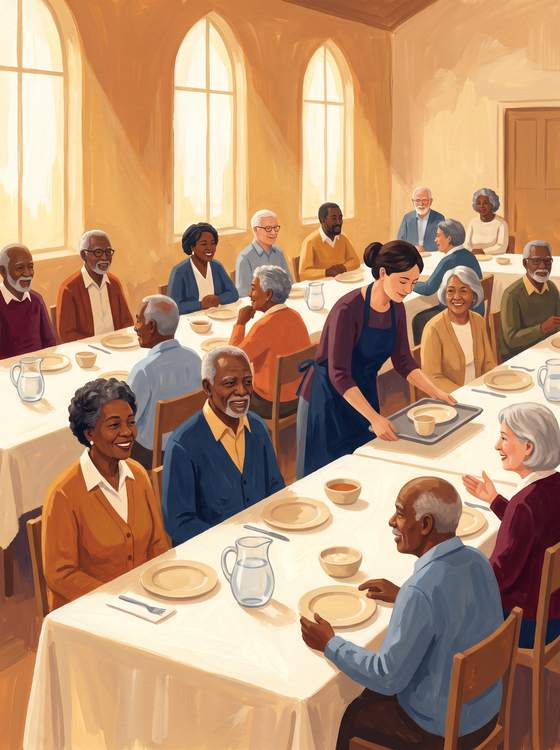
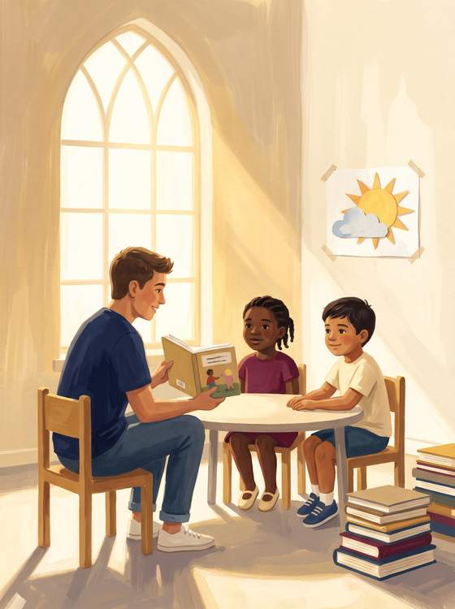
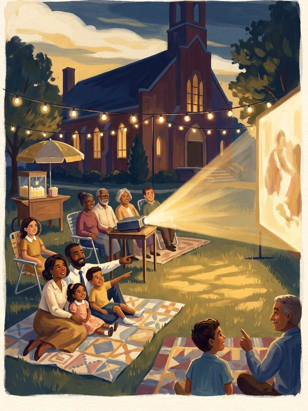

Sixty years on the West Side. Let's make sure the city hears about it.
A media and growth plan for Bethel's 60th year. Reliable Sundays, a welcoming front door online, and events that bring young families through the doors.
The work is already being done
Bethel is not starting from nothing. The hardest part of media work has been happening faithfully for years. It simply is not reaching anyone yet.
Someone here has recorded and posted a sermon nearly every week for years. That is real, sustained effort. The videos are just not titled, clipped, or placed anywhere people actually look.
The technology is fragile
One 2020 laptop with a failing battery runs everything. The front monitors have gone dark, and two of the streaming programs it depends on are no longer updated by their makers. There is no backup when it fails.
The front door is half open
Sunday worship streams on Zoom, which is invitation-only by nature, so no public link exists for a neighbor to find. The Facebook page has 40 followers and has been quiet since early last year. There is no Instagram and no TikTok.
The good news
Nothing here needs a large budget. It needs the existing effort pointed somewhere useful, a few one-time repairs, and a steady hand each week. That is this plan.
Bethel is already a hub. Almost nobody outside these walls knows it.
Before writing any of this I looked up what this church actually does. Three things stood out, and not one of them shows up anywhere a stranger would look.
A city senior center runs in your fellowship hall
Weekday hot meals for neighbors over sixty, operated in Owens Hall in partnership with the City of San Antonio. That is not a small thing. That is a congregation trusted by the city to feed its elders five days a week.
Twenty neighborhood children spent the summer reading here
Project Transformation brought a literacy and mentorship programme into this building, in a zip code where about six percent of adults hold a bachelor's degree. Those are the families already walking through your doors.
And a thrift store, and the neighborhood's meetings
The building also houses a thrift store and hosts community council gatherings, with the district councilman among the people who use the room. Bethel is where this block already assembles.


This is the part that matters
A church that feeds its elders, teaches its children to read, and lends its room to the neighborhood is not a church with nothing to say. It is a church whose story is not leaving the building. Everything in this plan exists to fix that one problem.
Why trust this to someone you just met
I hand the skill over instead of renting it to you
An agency charging $500 to $2,500 a month needs Bethel to never learn this work. If you got good at it, they would lose the account. My plan ends the opposite way. Within a year your own young people run the cameras and the posting, and I direct. You are buying a capability, not a subscription.
I am the congregation you are trying to reach
I am 25 and I am from this city. You can hire a marketing company in another state that has never set foot on the West Side, or you can hire someone a sixteen-year-old at Edgewood will actually listen to. That is not a service I learned. It is just who is standing here.
Nobody has ever told your story
I searched the Express-News, KSAT, KENS5 and the Current for coverage of this church. There is none. Sixty years on this block, a city senior center in your fellowship hall, twenty neighborhood children in a summer reading program, and not one article. I interned at the San Antonio Current. I know how to bring them a story worth running.
What I bring
- Digital Cinematography student at Full Sail University
- Professional cinema camera and lighting, already owned and insured
- I direct a short film with a cast and crew nearly every month, so running a small team on a schedule is the work I already do
- Former San Antonio Current intern
Being straight with you
I am one person, not a firm. I work weekends elsewhere right now, which is exactly why training your young people is built into the plan from week one rather than added later. Hold me to results at 90 days and walk away if they are not there.
Make Sunday reliable
This follows the AV team's own three-phase outline, with one money-saving change: a Mac mini instead of a new Windows desktop keeps the software everyone already knows and avoids retraining volunteers.
The goal is simple. A volunteer sits down on Sunday morning, presses one button, and it works, every week, with a spare machine ready if it does not.

Replace the MacBook battery, which is the confirmed fault. Run a real HDMI cable to the front monitors instead of wireless mirroring, which is the main reason the screens drop. Replace the two abandoned streaming programs with OBS Studio, the free professional standard.
Purchase a Mac mini as the dedicated production computer. It is quiet, small, and keeps every program the team already knows. The repaired MacBook becomes the ready-to-use backup the AV team has asked for.
Stream live to the YouTube channel Bethel already owns, alongside Zoom. It is free, it saves every service automatically, and it lets anyone in the city find Bethel with a search. Members who love Zoom keep Zoom. Nothing is taken away.
Confirm two licenses most churches overlook: a CCLI Streaming License, required to put worship music online, and a CVLI license if we hold movie nights. If Bethel already holds them, we are covered. If not, I would rather find that now than after a claim.
OBS Studio is the free streaming software the United Methodist Church documents in its own guide on ResourceUMC. This is the standard path, not an experiment.
What we build together
Six pieces, in the order they start paying off.
A presence, run for you
Facebook for the congregation we have: service reminders, event photos, celebrations, prayer updates. Instagram and TikTok for the congregation we want: short, joyful videos where people under 35 actually look.
- Sunday: capture the service and the moments after
- Two to three posts written and scheduled for you each week
- One to two short videos edited from Sunday footage
- Nothing posts without the pastor's approval for the first 60 days


"Take It With You" · a one-minute interview series
After service, one question on camera: what is one thing you are taking with you this week?
- Sixty seconds, warm and human. Members, visitors, children, elders.
- Longtime members telling their Bethel stories becomes a second series that honors the church's history in its 60th year
- These are the videos people share with family. They travel farther than any advertisement, because they are real.
- Anyone can decline. Children appear only with signed parent permission.
Events that help pay for themselves
Local businesses sponsor family events for the goodwill and visibility. Sponsors cover costs; the church keeps the community.
- Movie Night on the Lawn: family film, free entry, concessions table, a sponsor covers the screen and snacks
- Food Truck Sunday: once a month after service, trucks pay a modest pitch fee, neighbors stay and mingle
- Back-to-School Supply Drive: August, sponsors fund supplies, families receive them at the church
- Open Mic & Gospel Night: local singers perform in the sanctuary, and it doubles as our choir recruiting pipeline
- Youth Game Night: cheap to run, exactly what draws teenagers
- Rent the space, with sound included. Comparable San Antonio churches charge by the hour for weddings, quinceañeras and recitals, and build the sound technician into the price. Owens Hall and the sanctuary sit empty six days a week.
Sponsor tiers at $250, $500 and $1,000 match what comparable church festivals charge locally. Recognition is always written as a thank-you and never as an advertisement, which is what keeps the money tax-free for the church under IRS sponsorship rules.



Finding musicians and choir voices
- Open Mic & Gospel Night is the funnel. Every local singer who performs once has stood in this sanctuary and felt welcome. With the Music Director seat currently open, it is the fastest way to meet the person who fills it.
- Community Choir Nights, one evening a month: no audition, no commitment, come sing. The ones who stay become members.
- Put the choir on camera. Well-shot choir clips are the most shareable thing a church owns, and musicians go where music is celebrated.
- Quiet partnerships with local music shops, school programs and community college choirs. Directors always know a student who needs a place to play.
A youth media team: the outreach that staffs itself
Ask a teenager on this block what they want to be. A great many will say a creator. In a 2023 Morning Consult survey of a thousand young people, 57 percent said they would become an influencer if they had the chance.
This is not a passing mood, and a small college just proved what it is worth. Last week Hendrix College, a private liberal arts school in Conway, Arkansas, hosted a week-long camp for 120 young creators. It drew close to 57 million hours of viewing and peaked at 1.45 million people watching at once. Hendrix students worked it as crew and gained real production experience, and the college's president said it brought people to Arkansas who had never heard of the place.
A small school became, for one week, somewhere the whole country was looking, and it did it by handing its own young people the work. The children in this neighborhood watched every minute of that. What almost none of them have is a single adult nearby who can actually teach the craft.
Bethel can be that adult. I train two to four of your own teenagers and young adults to run the cameras and help with the posting.
- Real production skills from a working film student, at no cost to the family
- Service hours schools require, signed off by the church
- Edgewood Fine Arts Academy is less than a mile away and already teaches fine arts and media. That is our recruiting pool.
- Within months, Bethel owns its media team instead of renting one
Before working with any young people I will complete Safe Sanctuaries training and a background check on my own time, and every minute on camera follows the two-adult rule with signed parent permission.


A website that answers the five questions
- When are services, and where are you?
- What are you like? Photos, and the interview videos.
- Can I watch before I visit? The livestream, embedded.
- What is coming up? An events calendar.
- How do I give, or get in touch?
Modern hosting costs a few dollars a month, not hundreds. Updates take minutes and are included in the monthly plan, so it never goes stale again. It will be designed phone-first, with large readable text for every generation.
Build your own estimate
Choose only what Bethel wants. The total updates as you go, so the board can see the real first-year figure before deciding anything.
Two Rio Texas Conference grants may cover the one-time work entirely. I will write the applications for Bethel at no charge.
Free money we should go after first
New People, New Places, up to $6,000 from the Rio Texas Conference. Verified open for the 2026 cycle.
Black Church Development Grant, up to $5,000, whose funding areas include Technology Upgrade and Ministry with Younger People. We should confirm the current cycle by phone.
I write both applications for Bethel at no charge. If either lands, the equipment and licenses are paid for and the monthly plan is the only line left in the budget.
No contract
Month to month. Cancel any time with two weeks' notice. My recommendation is to begin at Starter and review at 90 days against numbers we agree on now.
Sponsor revenue and new facility rentals are designed to offset a meaningful part of this cost.
The first 90 days
Days 1–30
- Battery repair, HDMI to monitors, OBS installed
- Monitors working again on Sunday
- Social pages opened, first posts
- Website build begins
Days 31–60
- Mac mini installed, MacBook becomes backup
- YouTube stream live alongside Zoom
- "Take It With You" series begins
- New website launches
- First two youth trainees on camera
Days 61–90
- First sponsored event
- Open Mic & Gospel Night, choir recruiting begins
- Review the numbers together against where we started
Today's baseline, written down
29 YouTube subscribers · 123 videos · 40 Facebook followers · no Instagram · no public livestream. Every number in the 90-day review gets measured against this line, so the result is a fact and not an opinion.
Where every number comes from
Nothing in this plan is a guess. Each figure was read off the source named below in July 2026. If any of it does not hold up, tell me and I will correct it.
Equipment and licensing
-
Mac mini, $799 retail
"Mac mini — From $799"
apple.com/shop/buy-mac/mac-mini -
Mac mini, $699 with education pricing
"From $699 … Includes Education Savings"
apple.com/us-edu/shop/buy-mac/mac-mini -
MacBook Pro battery, about $249 out of warranty confirm first
Apple publishes no flat price for this service. Repair-industry trackers put MacBook Pro battery replacement at $249. I will run Apple's own estimate with your serial number before ordering anything.
support.apple.com/mac/repair/service -
CVLI movie licence, $315 a year at Bethel's attendance
"1–99 (A & AH) — $315.00"
us.cvli.com/about/pricing -
CCLI streaming licence, and why the base licence is also required confirm at checkout
"start from just $84 per year… or $108 for an average church (100–199 people)" and "our streaming licenses extend the song reproduction rights provided by the Church Copyright License"
ccli.com/us/en/streaming -
OBS Studio as the free streaming software, documented by the UMC itself
"a free and powerful tool that many churches use to livestream worship"
resourceumc.org — Streaming church worship with OBS Studio
Grants, tax and revenue
-
New People, New Places grant, up to $6,000, open for the 2026 cycle
"in an amount up to $6,000" and "only 20% of the grant can be used for salary"
riotexas.org/new-people-new-places-grant -
Black Church Development Grant, up to $5,000, funding Technology Upgrade and Ministry with Younger People cycle unconfirmed
The programme page is live, but every published deadline dates to 2024. We should confirm the current cycle by phone at (210) 408-4500 before counting on it.
riotexas.org — Black Church Development Grant -
Sponsor recognition that stays tax-free for the church
A payment is a qualified sponsorship when the sponsor receives no substantial benefit beyond use or acknowledgement of its name or logo. Qualitative claims, prices, endorsements or a call to buy turn it into taxable advertising.
irs.gov — Advertising or qualified sponsorship payments -
Giving is higher at churches using online giving association, not proof
Per-person annual giving was "$1,809" at congregations with no online giving, rising to "$2,428" where it is used a lot. Spring 2023 data, 4,809 congregations, 58 denominational groups.
lakeinstitute.org — 2023 Giving Trends in Christian Congregations
Bethel's own numbers, and the youth case
-
Bethel's channel: 29 subscribers, 123 videos
"BUMCSA @bumcsa2482 · 29 subscribers · 123 videos"
youtube.com/@bumcsa2482 -
More than half of young people would choose to be a creator
"57%" of Gen Z said they would become an influencer given the chance, in a 2023 Morning Consult survey of 1,000 young people.
cnbc.com — More than half of Gen Z want to be influencers -
The creator camp at Hendrix College, in the college's own words
July 15–20, 2026, 120 creator participants on campus, close to 57 million hours watched, a peak of 1.45 million concurrent viewers, and roughly 6,000 channels broadcasting. Hendrix students worked the event and gained experience in technology, event management and broadcast production. President Karen Petersen: "We brought people to Arkansas, virtually and physically, who've never heard of this place before."
hendrix.edu — Streamer U brings thousands of visitors to Hendrix College -
And it is not a one-off. The next one goes international.
"Streamer University 2027 will be taking place in Europe," announced in the closing moments of the 2026 event.
complex.com — Streamer University will head to Europe for its third year -
Local news coverage of the same event, for a second read
Arkansas television covered what the camp did for its host town. One resident's line for why it mattered: it is "putting us on the map," with hopes of "more people, more positivity, more tourists."
katv.com — Streamer University brings millions of viewers to Hendrix College -
Bethel's denominational record: membership, attendance and standing
The congregation's official statistics are published by the denomination's General Council on Finance and Administration under GCFA number 763843.
umc.org — Find-A-Church listing for Bethel UMC
One honest caution about the giving research
That study shows churches with online giving and hybrid worship receive more per person. It is a strong association across thousands of congregations, but it is not proof that adding technology causes the increase. I am not promising Bethel a rise in giving. I am telling you where the evidence points and letting you weigh it.

Approve the AV repair and a 90-day media pilot. Then judge by the results.
Everything is measured and reported monthly: what was posted, what it reached, who walked through the doors. If it is not working by day 90, we shake hands and Bethel keeps the working AV system, the new website, and everything built along the way.